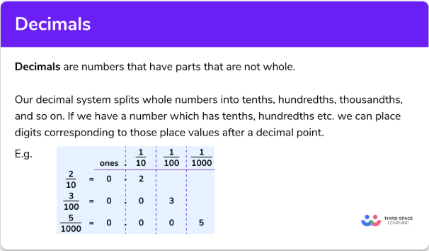
Understanding Decimals
In this lesson, we will explore the concept of Decimals in mathematics...
Decimals
In this lesson you will learn how to add, subtract, multiply and divide decimals. there will be a quiz at the end based on previous exam questions from Edexcel,AQA and OCR.
What Are Decimals?
Decimals are parts of number they are not whole.
The decimal system we use splits whole numbers into tenths, hundredths, thousandths, and so on.
If a number we have has tenths, hundredths etc. Those digits can then be placed to the corresponding value after the decimals point.
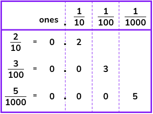
For some fractions equivalent ones can be found by making the current fraction have a denominator that is a power of ten.
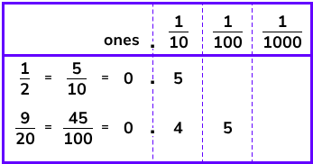
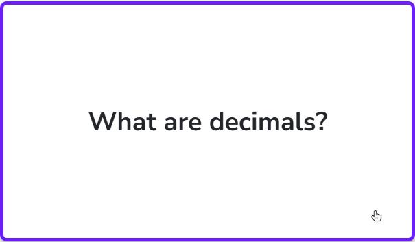
Ordering decimals
Ordering decimals will be required of you so you will need to know how to compare decimals and write them in an ordered list.
Lists will be in ascending order meaning smallest to largest and descending order meaning largest to smallest.
Two techniques are commonly used to help order decimals.
- Extra Zeros
The method is to write extra zeros on the end of the decimals so that all numbers have the same amount of decimals places. it can also help with comparison to write the numbers in a vertical line.
For example we can take the following numbers: 0.7, 0.02, 0.09 and add a zero to the end of 0.7 to make it 0.70 and align it vertically
0.70
0.02
0.09
By looking down the column you can see which digit is the highest here it is 7 which makes 0.7 the largest number out of this list.
- Compare each place value
This method involves comparing one decimal place at a time. Starting an the tenths and then grouping numbers accordingly.
e.g
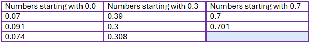
Then look at the next digit to place them in order from smallest to largest.
The answer would be: 0.07, 0.074, 0.091, 0.3, 0.39, 0.308, 0.7, 0.701.
Number line decimal
It is helpful to visualise decimals on a number line.
In your GCSE paper could ask you to mark a decimal on a number line.
In this example the number 0.472 has been marked. its position has been estimated between 0.4 and 0.5 but it is closer to 0.5.
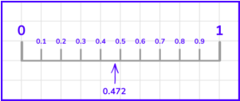
You can zoom in the number line between 0.4 and 0.5 and increase the steps between by 0.01 we can then position the decimal more accurately
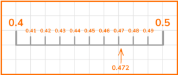
The next step would be to zoom it in once again to be between 0.47 and 0.48 and each step increasing by 0.001 then the exact position can be placed.
Calculating with Decimals
Ensure when calculating that the decimal points are aligned
Decimal Addition
3.6 + 2.58
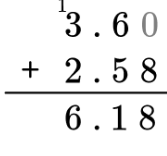
Decimal Subtraction
0.548 - 0.27
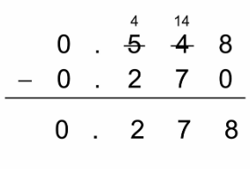
Decimal Multiplication
For Multiplication, you can ignore the decimal points and multiply the numbers as if they were whole numbers. Then, count the total number of decimal places in the original numbers and place the decimal point in the product accordingly.
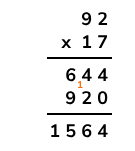
Decimal Division
You can turn the numbers into a fraction first number as the numerator and the second as the denominator. Then make them whole numbers and divide them normally to get your answer
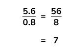